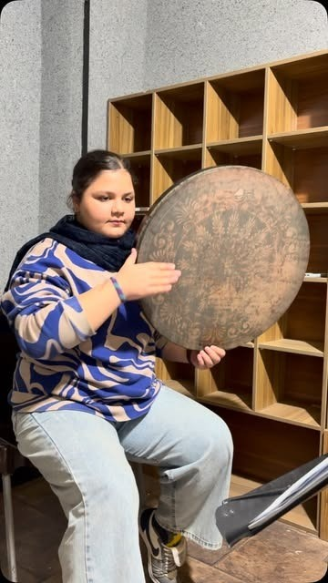
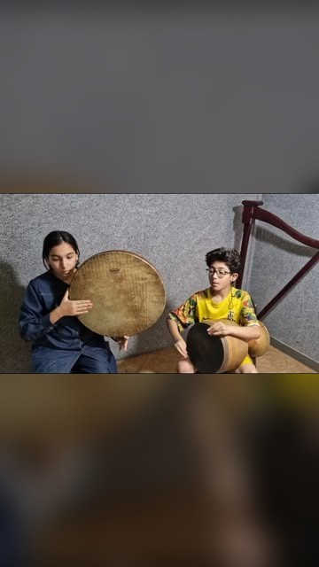

آموزشگاه موسیقی · نارمک، خیابان شهید ثانی
ساز بزن؛ صحنه منتظر توست.
آموزش تخصصی ساز و آواز برای کودک، نوجوان و بزرگسال؛ با اساتید مجرب، متد استاندارد و سالن اجرای خودمان.



- ۷ مسیرساز و آواز، از پیانو تا سنتور
- کودک تا بزرگسالکلاس برای هر سن و سطح
- سالن اجراکنسرتهای گروهی هنرجوها
- ۷٬۷۵۹ نفرما را در اینستاگرام دنبال میکنند
سازها و آواز
ساز خودت را انتخاب کن
برای هر ساز، کلاس تخصصی با استاد همان ساز.
-
نتخوانی، تکنیک و قطعهنوازی
رزرو مشاوره برای پیانو -

از اولین آکورد تا اجرای قطعه
رزرو مشاوره برای گیتار -
ریتم و سازهای کوبهای
رزرو مشاوره برای دف، تنبک و کاخن -

سنتور ایرانی با متد استاندارد
رزرو مشاوره برای سنتور -
ردیف و موسیقی ایرانی
رزرو مشاوره برای تار و سهتار -

شروع موسیقی برای کودکان
رزرو مشاوره برای بلز و فلوت -
تنفس، تکنیک صدا و اجرا
رزرو مشاوره برای آواز - ساز دیگری در نظر داری؟بپرس؛ راهنماییات میکنیم.
مسیر یادگیری
از اولین تماس تا اولین اجرا
تماس یا ثبتنام
فرم را پر کنید یا زنگ بزنید.
مشاوره و تعیین سطح
سلیقه و سطح شما را میشنویم و ساز مناسب را پیشنهاد میدهیم.
شروع کلاس با استاد
هر کلاس با استادی که نوازندهی همان ساز است.
اولین اجرا روی صحنه
در کنسرتهای گروهی جلوی خانواده و دوستانتان مینوازید.
سالن اجرا و رویداد
هر هنرجو، یک شب روی صحنه
سیساز سالن اجرای خودش را دارد. هنرجوها در کنسرتهای گروهی جلوی خانواده و دوستانشان مینوازند.

لحظههایی از اجراها
 پیانو (دیدن ریل در اینستاگرام، برگهی جدید)
پیانو (دیدن ریل در اینستاگرام، برگهی جدید)
 پیانو (دیدن ریل در اینستاگرام، برگهی جدید)
پیانو (دیدن ریل در اینستاگرام، برگهی جدید)

دف و تنبک (دیدن ریل در اینستاگرام، برگهی جدید) کاخن و هنگدرام (دیدن ریل در اینستاگرام، برگهی جدید)
کاخن و هنگدرام (دیدن ریل در اینستاگرام، برگهی جدید)
۷٬۷۵۹ دنبالکننده · ۵۴۳ پست
دنبال کردن @sisaz_musicپرسش و پاسخ
قبل از شروع، بپرس
از چند سالگی میشود شروع کرد؟
کودک، نوجوان و بزرگسال میتوانند شروع کنند. در جلسهی مشاوره، ساز و کلاس مناسب سن و سطح را با هم انتخاب میکنیم.
هنوز نمیدانم کدام ساز را انتخاب کنم.
اشکالی ندارد. در فرم گزینهی «هنوز مطمئن نیستم» را بزنید؛ در جلسهی مشاوره سلیقهی شما را میشنویم و پیشنهاد میدهیم.
سالن اجرا برای چیست؟
هنرجوها در کنسرتهای گروهی سیساز روی صحنه میروند. اجرا کنار کلاس، بخشی از مسیر یادگیری است.
شهریه و ساعت کلاسها چقدر است؟
به ساز و دوره بستگی دارد و هنگام تماس یا در جلسهی مشاوره اعلام میشود.
چطور ثبتنام کنم؟
فرم پایین همین صفحه را پر کنید یا با ۷۷۹۲۹۲۹۳ تماس بگیرید. بعد از هماهنگی، جلسهی مشاوره و تعیین سطح برگزار میشود.
شروع کنید
ثبتنام و مشاوره
فرم را پر کنید؛ برای هماهنگی جلسهی مشاوره و تعیین سطح تماس میگیریم.
درخواست شما ثبت شد.
برای هماهنگی جلسهی مشاوره و تعیین سطح با شما تماس میگیریم.
نسخهی نمایشی: اطلاعات جایی ارسال نمیشود.